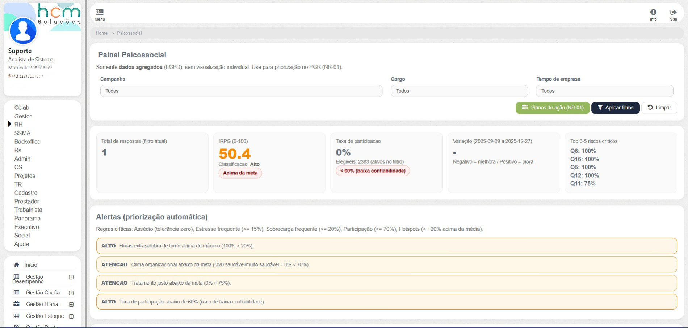
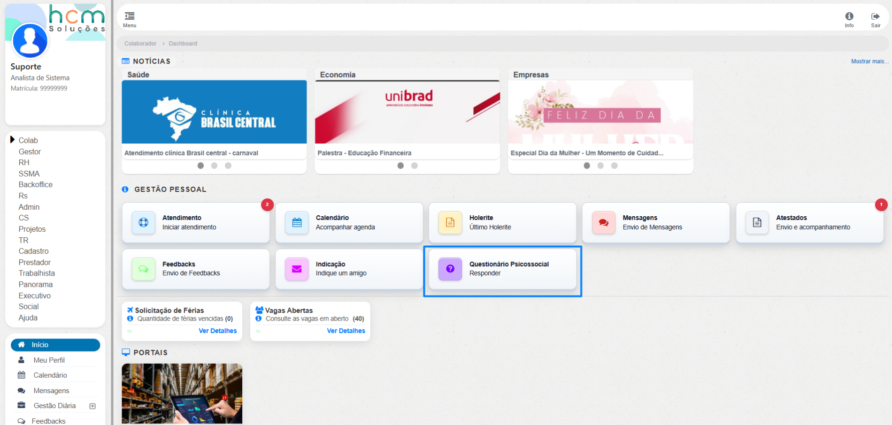
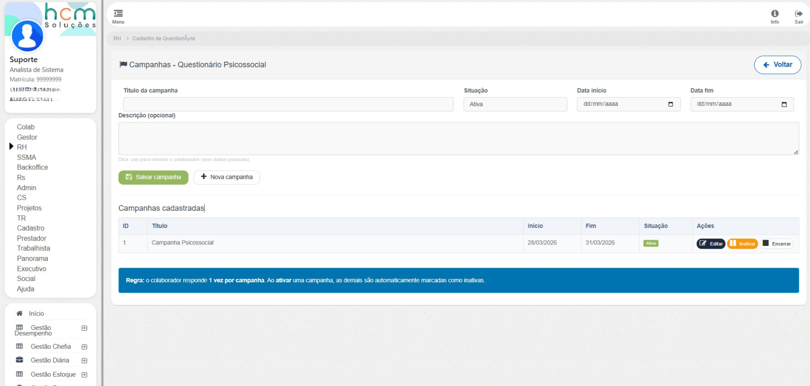
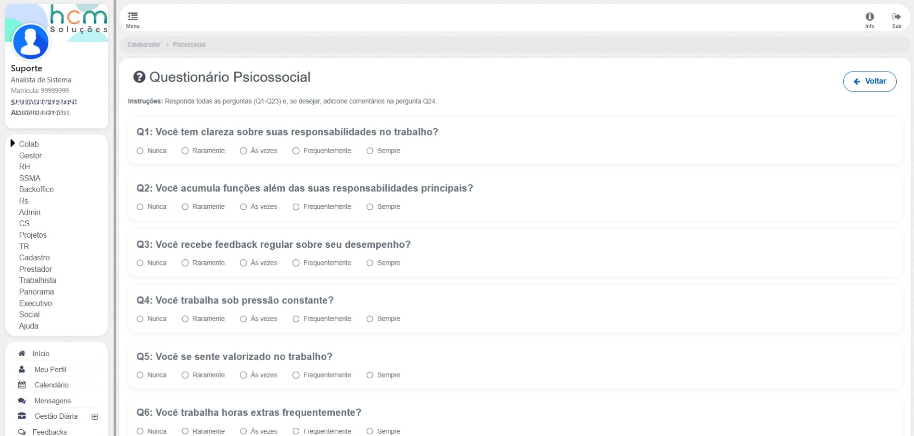
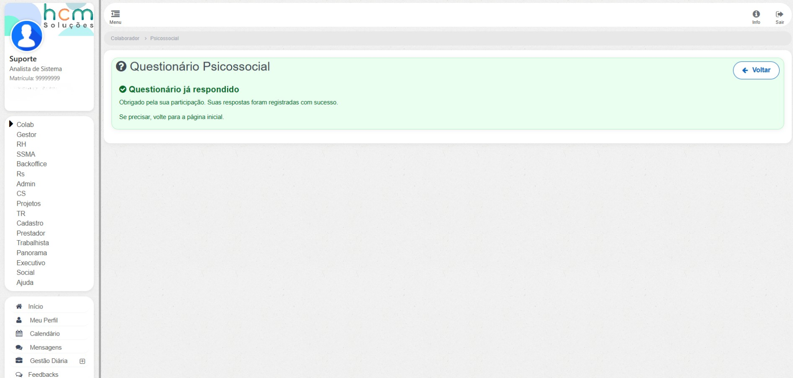
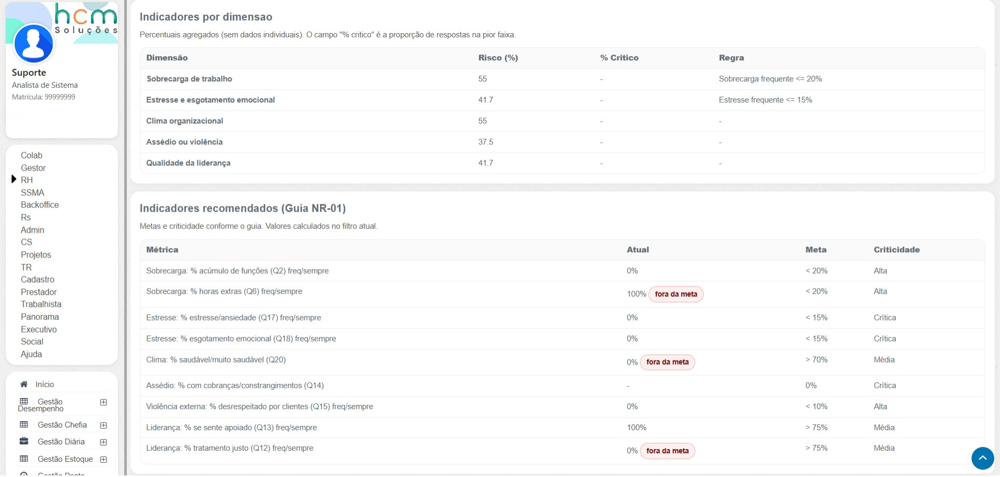
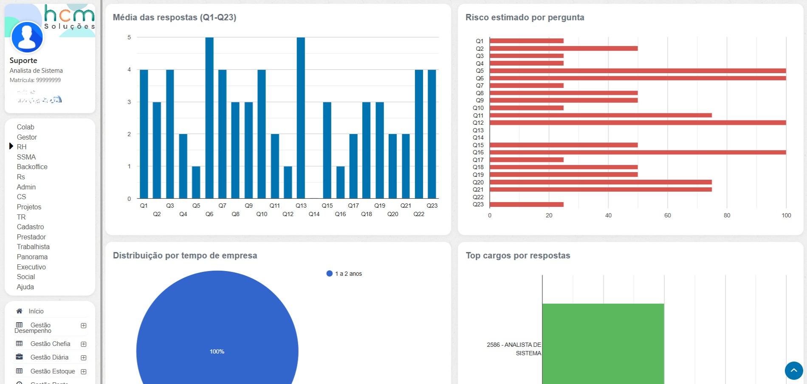
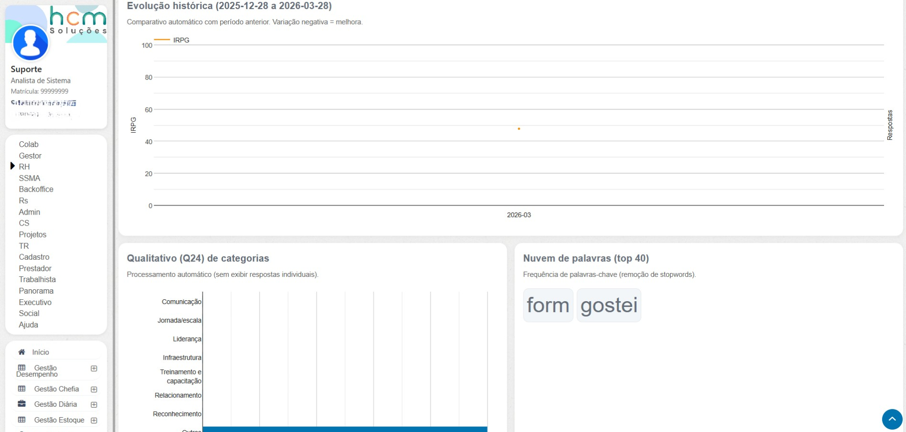
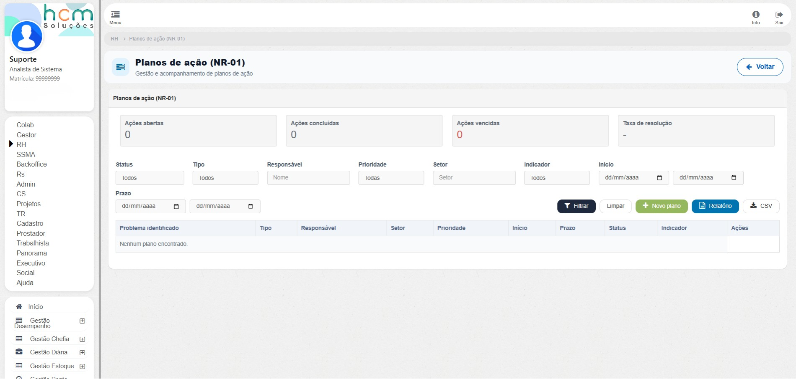
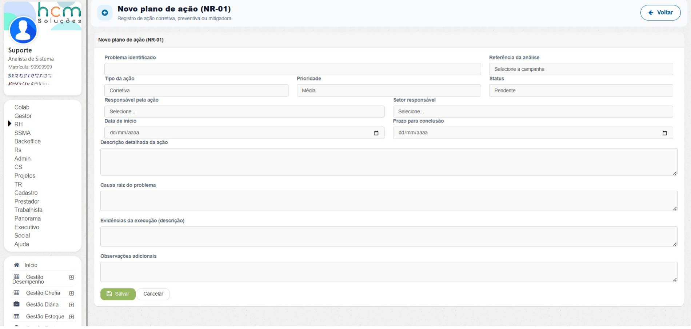

Case detalhado
Programa de monitoramento psicossocial com campanhas, resposta anônima, analytics de risco e planos de ação
Solução ponta a ponta para apoiar gestão de riscos psicossociais, cobrindo governança de campanhas, coleta estruturada para colaboradores, painel analítico agregado e desdobramento em planos de ação.
O fluxo foi desenhado para manter privacidade, evitar respostas duplicadas, transformar dados em priorização objetiva e fechar o ciclo entre diagnóstico e ação corretiva ou preventiva em conformidade com a NR-01.

Cadastro com ciclo de vida controlado e regra de ativação exclusiva por campanha.
Uma resposta por colaborador e experiência guiada para responder sem fricção.
IRPG, alertas, hotspots, análise temporal e leitura agregada orientada à decisão.
Planos de ação com KPIs, filtros, prazos, prioridades e acompanhamento operacional.
Galeria
Visões da funcionalidade









Contexto e problema
A funcionalidade foi inserida em uma plataforma corporativa de gestão de pessoas, saúde ocupacional e conformidade trabalhista.
Antes da abordagem integrada, campanhas tinham pouca governança de status e período, havia risco de respostas duplicadas, dificuldade para converter respostas em indicadores acionáveis e baixa rastreabilidade entre insight e plano executável.
Também existia o risco de leitura individualizada de dados sensíveis, em vez de uma visão agregada orientada à prevenção e conformidade.
Solução implementada
- Gestão de campanhas com cadastro, edição, datas, situação e ativação exclusiva para controlar elegibilidade de resposta.
- Fluxo do colaborador condicionado ao estado da campanha, bloqueando envio quando não há campanha ativa ou quando a resposta já foi registrada.
- Questionário com 23 perguntas objetivas e 1 pergunta aberta opcional, validação obrigatória e preservação de respostas em caso de erro.
- Painel analítico com filtros, IRPG, alertas por limiar, análise temporal, hotspots e leitura qualitativa da pergunta aberta.
- Módulo de planos de ação NR-01 integrado ao diagnóstico para fechar o ciclo medir, priorizar, agir e acompanhar.
Tecnologias utilizadas
- Back-end em PHP com arquitetura MVC e consultas SQL relacionais com agregações, `COUNT`, `AVG`, `GROUP BY` e filtros dinâmicos.
- Front-end em HTML, CSS, JavaScript, jQuery e componentes responsivos por perfil de uso.
- Google Charts para visualização de colunas, barras, pizza, linha e tabelas analíticas.
- Tour guiado com persistência em `localStorage` para onboarding do usuário de negócio.
- Uso de sessão e contexto de permissão para separar experiências de colaborador, RH e SSMA.
Desafios técnicos
- Conciliar privacidade com utilidade analítica, resolvido com tokenização anônima, exibição agregada e supressão de grupos pequenos.
- Normalizar perguntas com escalas e polaridades diferentes na mesma métrica global de risco.
- Evitar sobreposição operacional de campanhas por meio de controle de status com ativação exclusiva.
- Transformar dashboards em execução real com planos de ação, filtros, indicadores de prazo e taxa de resolução.
- Facilitar adoção por usuários não técnicos com KPIs de topo, alertas priorizados e tour contextual.
Resultados e boas práticas
A solução estruturou um pipeline completo de risco psicossocial, elevou a confiabilidade estatística com regra de resposta única, melhorou a priorização com alertas e hotspots e adicionou governança operacional para execução de planos NR-01. Tudo isso preservando privacidade com leitura exclusivamente agregada.
Tokenização determinística e não exibição individual de respostas sensíveis.
Ciclo de campanha controlado, coleta elegível e indicadores com regras explícitas.
IRPG, alertas e hotspots para converter resposta em foco de intervenção.
Planos de ação com prazos, responsáveis, status e taxa de resolução para fechar o ciclo.